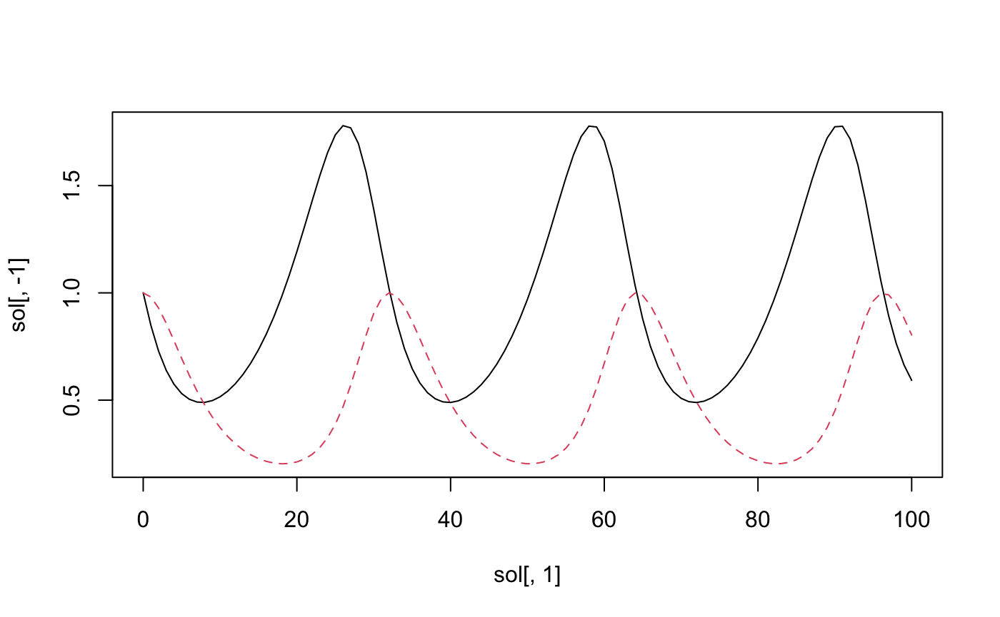

elixir is a set of tools for transforming R expressions,
including into other programming languages.
One of the neat features of R is that you can use the language to inspect itself. Expressions, functions, indeed entire R scripts can be examined and manipulated just like any list, data.frame, or other R object.
However, the syntax for manipulating R language objects is a little
tricky. Packages such as rlang help to make this task
easier. elixir makes a few extra shortcuts available, and
is geared for advanced R users.
Find and replace for language objects
Sometimes you want to detect certain patterns within an expression or
list of expressions, or easily replace a certain pattern with another.
When working with strings, regular expressions are a handy way of
accomplishing such tasks. elixir provides a sort of
“regular expressions for R expressions” functionality through the
functions expr_match(), expr_replace(), and
the “shortcut” functions expr_count(),
expr_detect(), expr_extract(), and
expr_locate().
Frequent users of the stringr package
will recognize the intentional similarity between the above functions
and str_match(), str_replace(),
str_count(), str_detect(),
str_extract(), and str_locate() from
stringr.
The easiest way to demonstrate these is through an example.
Example: a domain-specific language for ordinary differential equations
The Lotka-Volterra equations can be used to model a predator-prey interaction as a system of ordinary differential equations:
dx/dt = \alpha x - \beta x y \\ dy/dt = -\gamma y + \delta x y
Here, x is the predator density, y is the prey density, \alpha is the prey birth rate, \beta is the rate at which the prey is killed by the predator, \gamma is the predator net death rate in the absence of prey to eat, and \delta is the effect of eating prey on the predator birth rate.
One could implement this in R using the package
deSolve:
y <- c(x = 1, y = 1)
times <- 0:100
parms <- c(alpha = 1/6, beta = 1/3, gamma = 0.25, delta = 0.25)
func <- function(t, y, parms)
{
with(as.list(c(y, parms)), {
dx <- alpha * x - beta * x * y
dy <- -gamma * y + delta * x * y
return (list(c(dx, dy)))
})
}
# Run this with:
# sol <- deSolve::ode(y, times, func, parms)
# matplot(sol[, 1], sol[, -1], type = "l")
If you run those last two lines that are commented out, you should
see the solution plotted as above. (The lines are commented out so that
deSolve isn’t required to build this vignette.)
Let’s suppose that instead we want to start with a set of quoted statements like this:
system <- quote({
t_end = 100
x(0) = 1
y(0) = 1
dx/dt = alpha * x - beta * x * y
dy/dt = -gamma * y + delta * x * y
alpha = 1/6
beta = 1/3
gamma = 0.25
delta = 0.25
})and turn this into the components above. Here is one approach with
elixir. The aim isn’t to make something totally robust, but
just to get something up and running, and demonstrate the use of the
package.
First, we want to set the variable times to a set of
integers running from 0 to the specified t_end within
system. We can look for a statement of the form
t_end = .X like so:
expr_match(system, { t_end = .X })
#> expr_match: list(
#> list(match = quote(t_end = 100), loc = 2L, X = 100)
#> )elixir allows you to quote expressions inline using
{ curly braces } as above. It’s sort of the equivalent of
"quotation marks" for a string. This is handy to avoid
having the equals sign = interpreted as naming a parameter
to quote or rlang::expr:
# neither of these will work
expr_match(system, quote(t_end = .X))
expr_match(system, rlang::expr(t_end = .X))
# instead you would have to do something like this:
expr_match(system, quote((t_end = .X))[[2]])
expr_match(system, rlang::expr((t_end = .X))[[2]])
# This works because the expression (t_end = .X) is a call, which is list-like
# with two elements:
# [[1]] is the symbol `(`, and [[2]] is the call t_end = .X.We can extract the number 100 from this list returned by
expr_match, but instead we will use a shortcut,
expr_extract:
expr_extract(system, { t_end = .X }, "X")
#> [[1]]
#> [1] 100This always returns a list with as many entries as there
are matches, so if there were two statements of the form
t_end = .X then this would be a two-element
list. We can tell elixir to stop after the
first match:
expr_extract(system, { t_end = .X }, "X", n = 1)
#> [[1]]
#> [1] 100or use expr_count to make sure there is exactly one
t_end = .X statement:
if (expr_count(system, { t_end = .X }) != 1) {
stop("Need exactly one specification of end time.")
}and set times like so:
times <- 0:expr_extract(system, { t_end = .X }, "X")[[1]]
times
#> [1] 0 1 2 3 4 5 6 7 8 9 10 11 12 13 14 15 16 17
#> [19] 18 19 20 21 22 23 24 25 26 27 28 29 30 31 32 33 34 35
#> [37] 36 37 38 39 40 41 42 43 44 45 46 47 48 49 50 51 52 53
#> [55] 54 55 56 57 58 59 60 61 62 63 64 65 66 67 68 69 70 71
#> [73] 72 73 74 75 76 77 78 79 80 81 82 83 84 85 86 87 88 89
#> [91] 90 91 92 93 94 95 96 97 98 99 100OK, that’s done. Now let’s extract the initial state vector. For this
we want to look for patterns of the form .X(0) = .V:
expr_match(system, { .X(0) = .V })
#> expr_match: list(
#> list(match = quote(x(0) = 1), loc = 3L, X = quote(x), V = 1),
#> list(match = quote(y(0) = 1), loc = 4L, X = quote(y), V = 1)
#> )Again, we’ll use expr_extract to pull out the two needed
components, the names of the states (here “x” and “y”) and their initial
values (both 1).
expr_extract(system, { .X(0) = .V }, "X")
#> [[1]]
#> x
#>
#> [[2]]
#> y
expr_extract(system, { .X(0) = .V }, "V")
#> [[1]]
#> [1] 1
#>
#> [[2]]
#> [1] 1
y <- as.numeric(expr_extract(system, { .X(0) = .V }, "V"))
names(y) <- as.character(expr_extract(system, { .X(0) = .V }, "X"))
y
#> x y
#> 1 1Now for parameters, we might initially think to use:
expr_match(system, { .P = .X })
#> expr_match: list(
#> list(match = quote(t_end = 100), loc = 2L, P = quote(t_end), X = 100),
#> list(match = quote(gamma = 0.25), loc = 9L, P = quote(gamma), X = 0.25),
#> list(match = quote(delta = 0.25), loc = 10L, P = quote(delta), X = 0.25)
#> )But that picks up t_end and misses out on
alpha and beta. The reason the latter two
components are missed out is that in .P = .X,
.X only matches a single token, and 1/6 is an
expression with three tokens, /, 1, and
6. So we’ll use ..X instead of .X
so that we can match any subexpression:
expr_match(system, { .P = ..X })
#> expr_match: list(
#> list(match = quote(t_end = 100), loc = 2L, P = quote(t_end), X = 100),
#> list(match = quote(alpha = 1/6), loc = 7L, P = quote(alpha), X = quote(1/6)),
#> list(match = quote(beta = 1/3), loc = 8L, P = quote(beta), X = quote(1/3)),
#> list(match = quote(gamma = 0.25), loc = 9L, P = quote(gamma), X = 0.25),
#> list(match = quote(delta = 0.25), loc = 10L, P = quote(delta), X = 0.25)
#> )We can also filter out t_end by adding a “test” to the capture token
.P like so:
expr_match(system, { `.P|P != "t_end"` = ..X })
#> expr_match: list(
#> list(match = quote(alpha = 1/6), loc = 7L, P = quote(alpha), X = quote(1/6)),
#> list(match = quote(beta = 1/3), loc = 8L, P = quote(beta), X = quote(1/3)),
#> list(match = quote(gamma = 0.25), loc = 9L, P = quote(gamma), X = 0.25),
#> list(match = quote(delta = 0.25), loc = 10L, P = quote(delta), X = 0.25)
#> )Anything after the | is interpreted as a condition to
evaluate, and the match only succeeds if the condition evaluates to
TRUE. Within the condition, . is a placeholder
for the matched token, but we can also use the name of the token itself,
i.e. P. Note that we have to wrap the whole capture token
in backticks so that it gets read as a single symbol.
All together, we can get the parameters like so:
parms <- expr_extract(system, { `.P|P != "t_end"` = ..X }, "X")
parms <- sapply(parms, eval)
names(parms) <- as.character(expr_extract(system, { `.P|P != "t_end"` = ..X }, "P"))We need to use eval on what has been captured by
..X in order to evaluate the quoted expressions.
Capturing the ordinary differential equations themselves, and
inserting this into a function that deSolve can use,
requires us to look for patterns dX/dt = ...; since the
“dX” there is one symbol, we will check it to make sure it is a symbol
that starts with a lowercase d:
expr_match(system, { `.A:name|substr(A, 1, 1) == "d"`/dt = ..X })
#> expr_match: list(
#> list(match = quote(dx/dt = alpha * x - beta * x * y), loc = 5L, A = quote(dx), X = quote(alpha * x - beta * x * y)),
#> list(match = quote(dy/dt = -gamma * y + delta * x * y), loc = 6L, A = quote(dy), X = quote(-gamma * y + delta * x * y))
#> )Here, the :name checks that the the captured element
.A is of class name.
Let’s extract the statements:
statements <- expr_extract(system, { `.A:name|substr(A, 1, 1) == "d"`/dt = ..X })
statements
#> [[1]]
#> dx/dt = alpha * x - beta * x * y
#>
#> [[2]]
#> dy/dt = -gamma * y + delta * x * yWe can now use expr_replace to change
e.g. dX/dt = ... to dX <- ... so that it is
a valid R assignment statement:
R_statements <- expr_replace(statements,
{ `.A:name|substr(A, 1, 1) == "d"`/dt = ..X },
{ .A <- ..X })
R_statements
#> [[1]]
#> dx <- alpha * x - beta * x * y
#>
#> [[2]]
#> dy <- -gamma * y + delta * x * yLet’s also extract the names of the derivatives themselves,
i.e. dx and dy:
derivatives <- expr_replace(R_statements, { .D <- ..X }, { .D })
derivatives
#> [[1]]
#> dx
#>
#> [[2]]
#> dyFinally we put this all into a function using rlang and
its injection operators:
func <- eval(rlang::expr(
function(t, y, parms)
{
with(as.list(c(y, parms)), {
!!!R_statements
return (list(c(!!!derivatives)))
})
}
))Putting it all together into a wrapper function, we get something like this:
run_ode <- function(system)
{
# Get times
if (expr_count(system, { t_end = .X }) != 1) {
stop("Need exactly one specification of end time.")
}
times <- 0:expr_extract(system, { t_end = .X }, "X")[[1]]
# Get initial state
y <- as.numeric(expr_extract(system, { .X(0) = .V }, "V"))
names(y) <- as.character(expr_extract(system, { .X(0) = .V }, "X"))
# Get parameters
parms <- expr_extract(system, { `.P|P != "t_end"` = ..X }, "X")
parms <- sapply(parms, eval)
names(parms) <- as.character(expr_extract(system, { `.P|P != "t_end"` = ..X }, "P"))
# Get statements
statements <- expr_extract(system, { `.A:name|substr(A, 1, 1) == "d"`/dt = ..X })
R_statements <- expr_replace(statements,
{ `.A:name|substr(A, 1, 1) == "d"`/dt = ..X },
{ .A <- ..X })
derivatives <- expr_replace(R_statements, { .D <- ..X }, { .D })
func <- eval(rlang::expr(
function(t, y, parms)
{
with(as.list(c(y, parms)), {
!!!R_statements
return (list(c(!!!derivatives)))
})
}
))
# uncomment if deSolve is available:
# sol <- deSolve::ode(y, times, func, parms)
# matplot(sol[, 1], sol[, -1], type = "l")
}
system <- quote({
t_end = 100
x(0) = 1
y(0) = 1
dx/dt = alpha * x - beta * x * y
dy/dt = -gamma * y + delta * x * y
alpha = 1/6
beta = 1/3
gamma = 0.25
delta = 0.25
})
run_ode(system)Other elixir features
The function expr_apply() allows you to transform and
extract information from nested list structures which contain
expressions, so if you have a big structure and you want to check all
the variable names or make certain replacements, this may be useful.
expr_sub() offers an interface for extracting or
replacing part of an expression; the one advantage this has over
[[ is that it allows you to use NULL as the
index, which gives back the whole expression.
lang2str() does the opposite of str2lang();
it is like deparse1() which is new since R 4.0.0, but with
collapse = "" instead of collapse = " ".
Finally, meld(), translate(), and
reindent() are various experimental functions for
constructing code using R.